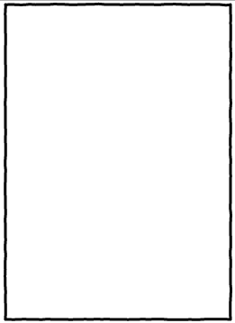
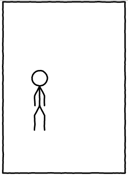
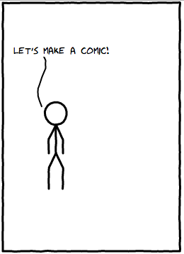
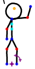

cmx.io
Fun With Web Comics
CoderDojoDC
on March 16, 2013
Presented by
Ben Kelly
There's this webcomic...

And now you can program one!
 cmx.io by
Antonin Hildebrand
cmx.io by
Antonin Hildebrand
Web Page Review
What are the three technologies used to create web pages?
HTML
Provides STRUCTURE and CONTENT
<h4>A list of things!</h4>
<ul>
<li>First this</li>
<li>Then this</li>
</ul>A list of things!
- First this
- Then this
CSS
Provides STYLING
li {
color:yellow;
}
A list of things!
- First this
- Then this
JavaScript
Provides LOGIC
var items = ['ex-first', 'ex-second'];
var displays = [true, true];
setInterval(function() {
var item = items.shift();
items.push(item);
var display = displays.shift();
displays.push(!display);
var attr = display ? 'list-item' : 'none';
window.document.getElementById(item).style.display = attr;
}, 1000);
A list of things!
- First this
- Then this
cmx.io
- cmx.io provides CSS and JavaScript
- You provide the structure with tags like HTML
Scene
<scene id="name_of_the_scene">
<-- Define what the scene is about in here! -->
</scene>
Actor
<scene id="name_of_the_scene">
<actor t="translate(75,88)">
<-- Define what the actor says here! -->
</actor>
</scene>
Bubble
<scene id="name_of_the_scene">
<actor t="translate(75,88)">
<bubble>
<tspan>Let's make a comic!</tspan>
</bubble>
</actor>
</scene>
Positioning
How do I move things around?
Remember that weird translate thing?
<actor t="translate(75,88)">
Easier to use your mouse for this!

Let's try it!
- In Chrome, open this URL: http://cmx.io/edit/#4958277
- Follow along for one scene.
- Make up your own ending!